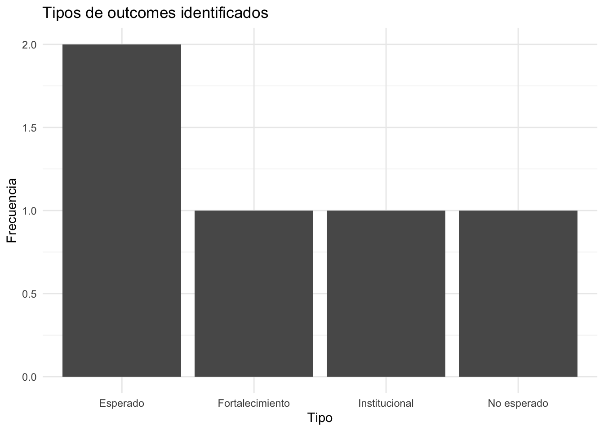

#> Actor Cambio Evidencia
#> 1 Estudiante Asiste regularmente a monitorías Registro de asistencia
#> 2 Estudiante Empieza a ayudar a otros compañeros Observación en sesiones
#> 3 Monitor Diseña materiales pedagógicos propios Materiales creados
#> 4 Profesor Integra monitorías en su curso Plan de curso actualizado19 Outcome Harvesting (OH)
19.1 A. Teoría y explicación
19.1.1 ¿Qué es Outcome Harvesting?
El Outcome Harvesting (OH) es una metodología de monitoreo, evaluación y aprendizaje que permite identificar, formular, verificar y analizar cambios (outcomes) generados por una intervención, trabajando de manera retrospectiva (de los resultados hacia las causas).
A diferencia de enfoques tradicionales, el OH no parte de indicadores predefinidos ni de una teoría de cambio completamente estructurada. En su lugar, se enfoca en responder:
- ¿Qué cambió?
- ¿Quién cambió?
- ¿Cómo ocurrió ese cambio?
- ¿Cómo contribuyó el programa?
En este enfoque, un outcome se define como un cambio en el comportamiento, las relaciones, las acciones o las prácticas de actores clave dentro del sistema (Wilson-Grau y Britt (2012)).
Esto lo hace especialmente útil en contextos complejos, donde los resultados son emergentes, no lineales y difíciles de anticipar. En lugar de intentar atribuir cambios directamente a una intervención, el Outcome Harvesting busca entender cómo el programa contribuyó al cambio.
Al igual que el Outcome Mapping, el OH reconoce que los cambios de largo plazo dependen de múltiples actores. Sin embargo, mientras el OM se usa principalmente para planificar y monitorear cambios esperados, el OH se utiliza para reconstruir cambios que ya ocurrieron, incluyendo resultados no previstos.
19.1.2 ¿Para qué sirve en evaluación?
El Outcome Harvesting es particularmente útil cuando el objetivo de la evaluación es entender cómo ocurrió el cambio, más que medir únicamente resultados finales.
Es especialmente adecuado cuando:
- Los resultados son impredecibles
- Hay múltiples actores influyendo en el cambio
- No es posible establecer causalidad directa
- Se requiere capturar resultados no esperados
- Se trabaja en contextos de cambio social o institucional
En estos casos, el OH permite responder preguntas como:
- ¿Qué cambios relevantes ocurrieron en el sistema?
- ¿Qué actores modificaron su comportamiento?
- ¿Qué papel jugó el programa en esos cambios?
- ¿Qué resultados emergieron que no estaban previstos?
En términos de complementariedad, el Outcome Harvesting se articula naturalmente con:
- Outcome Mapping → define cambios esperados
- PSM → entiende la estructura del sistema
- Métodos cuantitativos → estiman efectos causales
El OH, en este ecosistema, permite capturar lo que los otros enfoques pueden dejar por fuera: los cambios que surgen en la práctica y que no se habían previsto.
19.1.3 ¿Cómo se usa en evaluación de impacto?
El Outcome Harvesting no reemplaza la evaluación de impacto cuantitativa, pero cumple un rol clave en su fortalecimiento.
En particular, permite:
1. Identificar resultados emergentes
Muchos efectos de un programa no están en la teoría de cambio inicial. El OH permite capturarlos y analizarlos sistemáticamente.
2. Reconstruir mecanismos de cambio
Al analizar cómo ocurrieron los outcomes, se pueden identificar posibles rutas de cambio que luego pueden analizarse con métodos cuantitativos.
3. Generar hipótesis evaluables
Los outcomes identificados pueden convertirse en variables o hipótesis para análisis econométricos.
4. Entender contribución (no atribución)
El enfoque se centra en cómo el programa contribuyó a los cambios, reconociendo la influencia de otros factores.
En este sentido, el OH funciona como un puente entre evidencia cualitativa y análisis cuantitativo (Wilson-Grau y Britt (2012); Better Evaluation (2024)).
NotaConceptos clave
Outcome: Cambio en comportamiento, relaciones, acciones o prácticas de actores.
Outcome statement: Descripción estructurada del cambio observado, incluyendo quién cambió, qué cambió, cuándo y cómo contribuyó el programa.
Contribution:Explicación de cómo el programa influyó en el cambio, sin asumir que fue la única causa.
Substantiation: Proceso de verificación del outcome con fuentes independientes.
19.2 B. Aplicación paso a paso
19.2.1 Ejemplo aplicado: Programa de monitorías
Vamos a aplicar Outcome Harvesting al programa de monitorías académicas, simulando que el programa ya fue implementado y queremos reconstruir sus resultados.
19.2.2 Paso 1: Definir el enfoque del harvest
NotaPregunta guía
¿Qué cambios en el comportamiento de estudiantes, monitores y profesores ocurrieron como resultado del programa de monitorías?
19.2.3 Paso 2: Identificar actores clave
Al igual que en Outcome Mapping:
- Estudiantes
- Monitores
- Profesores
19.2.4 Paso 3: Identificar outcomes (simulación)
En lugar de definir cambios esperados, aquí recolectamos cambios observados.
19.2.5 Paso 4: Formular outcome statements
Ahora estructuramos los cambios:
#> Número Actor Cambio
#> 1 1 Estudiante Asiste regularmente a monitorías
#> 2 2 Estudiante Empieza a ayudar a otros compañeros
#> 3 3 Monitor Diseña materiales pedagógicos propios
#> 4 4 Profesor Integra monitorías en su curso
#> Outcome
#> 1 En 2024, estudiantes comenzaron a asistir regularmente a monitorías, influenciados por el programa, mejorando su participación académica
#> 2 En 2024, algunos estudiantes empezaron a apoyar a sus pares, evidenciando mayor apropiación del aprendizaje
#> 3 Monitores desarrollaron materiales pedagógicos propios, fortaleciendo su rol educativo
#> 4 Profesores integraron las monitorías en sus cursos19.2.6 Paso 5: Verificación (substantiation)
Simulamos validación de outcomes:
Mostrar código R
#> Outcome Fuente Validado
#> 1 1 Coordinador académico TRUE
#> 2 2 Observación externa TRUE
#> 3 3 Revisión documental TRUE
#> 4 4 Director de programa TRUE19.2.7 Paso 6: Análisis de outcomes
#> Tipo Frecuencia
#> 1 Esperado 2
#> 2 No esperado 1
#> 3 Fortalecimiento 1
#> 4 Institucional 119.2.8 Visualización
Mostrar código R

Nota
Importante
A diferencia del Outcome Mapping, aquí no definimos indicadores ex ante, sino que reconstruimos cambios reales a partir de evidencia.
19.3 C. ¿Cómo se usa en evaluación?
El valor del Outcome Harvesting está en su capacidad de traducir cambios observados en insumos útiles para la evaluación.
Podemos hacer tres conversiones clave:
19.3.1 1. De outcomes → indicadores
Los outcomes identificados pueden convertirse en variables observables:
Asistencia → número de sesiones Participación → escala de participación Apoyo a pares → variable binaria
Esto permite integrar el OH con análisis cuantitativos.
19.3.2 2. De actores → unidades de análisis
Estudiantes → nivel individual Monitores → nivel individual Profesores → nivel curso
Esto facilita el diseño de encuestas, paneles o bases administrativas.
19.3.3 3. De evidencia → datos
El OH permite mapear fuentes de información:
- Registros administrativos
- Observación
- Entrevistas
- Documentos institucionales
Esto fortalece la calidad de la evaluación.
19.3.4 4. De outcomes → hipótesis
Ejemplo:
- Hipótesis: monitorías aumentan participación académica
- Variable: nivel de participación
- Método: DiD o regresión
Nota
Importante
El Outcome Harvesting permite pasar de evidencia cualitativa a diseño cuantitativo, fortaleciendo la evaluación de impacto.
19.4 D. Limitaciones y riesgos
No identifica causalidad El OH no permite estimar efectos causales.
Riesgo de sesgo Depende de percepción y calidad de evidencia.
Verificación exigente Requiere triangulación rigurosa.
Intensivo en tiempo Recolectar outcomes puede ser costoso.
Riesgo de desconexión cuantitativa Si no se traduce a indicadores, pierde valor analítico.
19.5 E. Conclusiones y recomendaciones
El Outcome Harvesting permite entender cambios reales en contextos complejos, especialmente aquellos no previstos en el diseño inicial.
Su mayor valor radica en:
- Identificar resultados emergentes
- Reconstruir mecanismos de cambio
- Generar hipótesis evaluables
Recomendaciones:
- Usarlo después de la implementación
- Integrarlo con OM y métodos cuantitativos
- Priorizar outcomes relevantes
- Traducir resultados a indicadores
- Mantener rigor en la verificación
Nota
Idea final
Si Outcome Mapping responde “qué debería cambiar”, Outcome Harvesting responde “qué cambió realmente”.
Ambos enfoques, juntos, permiten una evaluación más completa.